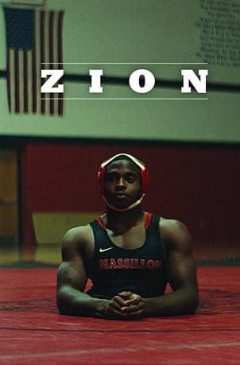

IMDB-Wertung: 7.2 / 10
IMDB-Wertung: 7.2 / 10  Metascore:
Metascore: 
A portrait of Zion Clark, a young wrestler who was born without legs and grew up in foster care.
 gesehen am 06.01.2019
gesehen am 06.01.2019 IMDB-Wertung: 7.2 / 10 Metascore:
A portrait of Zion Clark, a young wrestler who was born without legs and grew up in foster care.
Jahr: 2018
Dauer: 11 Minuten
FSK:
Land: USA Studio: NetflixTonspuren: - , - , - , - , - ,
Untertitel: Deutsch, Englisch,
Auflösung: 1080p (1920x1080) Größe: 390 MB
Genre: Dokumentation, Sport, Kurzfilm
Regisseur: Floyd Russ
Drehbuch:
Soundtrack: Victor Magro
Darsteller:
Datei: X:\Dokumentationen\Biografie\Zion (2018, FSK, 1920x1080).mkv seit 18.09.2018
Festplatte: HD Serien(SU-Z)+Dokus+Musik
 Es gibt insgesamt 21 Filme in der Gruppe 'Dokumentationen\Biografie'
Es gibt insgesamt 21 Filme in der Gruppe 'Dokumentationen\Biografie'